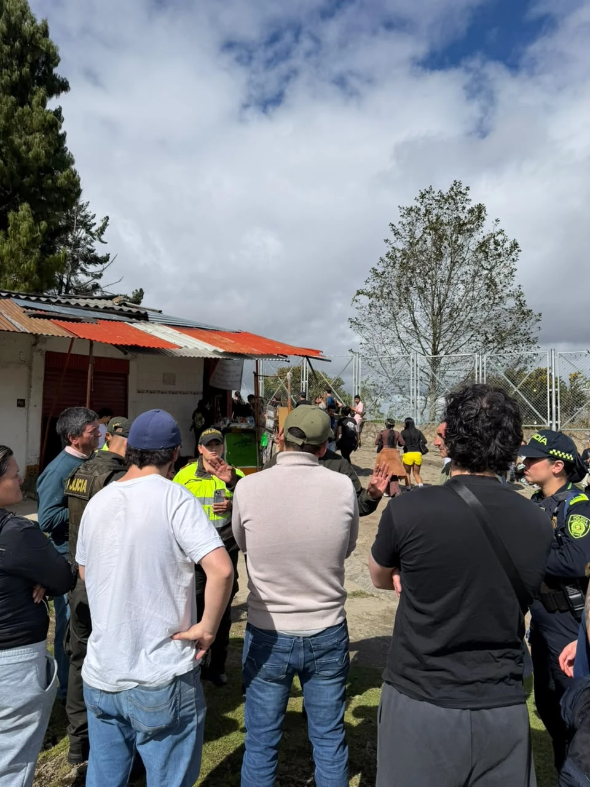

El caso en cifras
Sin trabajo y sin alternativa
¡La protección ambiental no puede hacerse a costa de la dignidad de las familias trabajadoras!
Qué pasó
De un acuerdo con el Distrito a los sellos
Conciliación con el Distrito
Distrito y habitantes del sector firmaron una conciliación extrajudicial: se acordó eliminar el uso habitacional y permitir la continuidad de ciertas actividades económicas.
Resolución de la CAR
A solicitud del IDRD, administrador del sendero, la CAR abrió una indagación preliminar, identificó 33 establecimientos y ordenó una medida preventiva. Esa caracterización se quedó corta: en el sendero trabajan más de 70 familias.
Cierre y sellamiento
La Alcaldía Local de Santa Fe ejecutó la medida. Los locales quedaron sellados sin que las entidades les explicaran qué requisitos ambientales debían cumplir ni les dieran la oportunidad de negociar condiciones para permanecer en el sendero.
Plantón en el sendero
Vendedores y vendedoras se manifestaron: «Somos vendedores, no delincuentes», «Derecho al trabajo».
Mesas de trabajo y tutela
Mesas con la CAR, el IDRD y otras entidades, con el acompañamiento de la Asociación de Pobladores Candelaria Vida Mía, la Coordinadora de Procesos y Barrios Populares del Borde Oriental y la concejala de Bogotá Heidy Sánchez Barreto. Se abrió la posibilidad de un Plan de Recreación Pasiva, pero sin cronograma. Una tutela fue negada en primera instancia; sigue el trámite administrativo ambiental.
Suben de nuevo a trabajar
Sin ingresos ni respuestas, comerciantes subieron temprano al sendero. Hubo diálogo con la Policía Nacional.
Constancia en el Congreso
El representante Gabriel Becerra dejó constancia en la Comisión Primera de la Cámara y pidió a la CAR, el IDRD y la Alcaldía una salida concertada.

Lo que piden las familias
Seis exigencias concretas
- Respeto al derecho al trabajo e información claraQue les digan con claridad qué requisitos ambientales deben cumplir para trabajar sin problemas. Las entidades simplemente sellaron los locales, sin darles la oportunidad de negociar las condiciones para permanecer en el sendero.
- Levantar la medida de cierreQue puedan volver a trabajar.
- Reconocer los acuerdos previosEmpezando por la conciliación de 2002 con el Distrito.
- Participar en el Plan de Recreación PasivaEl IDRD debe liderarlo con la comunidad, con un cronograma claro.
- Reglas de manejo ambientalCondiciones que hagan compatible el trabajo con la protección de la reserva.
- Atención inmediataAlternativas económicas mientras se resuelve el caso.
Sí a los Cerros Orientales
Proteger la reserva y a las familias
La comunidad no desconoce la importancia de proteger la Reserva Forestal Protectora Bosque Oriental de Bogotá. Pide que esa protección no deje sin sustento a decenas de familias sin alternativas reales, cuando existen acuerdos con el propio Distrito y es posible un manejo ambiental adecuado de su actividad.
Tú puedes ayudar
Compártelo ahora
Cada mensaje cuenta. Envía este sitio a tus grupos y pide a la CAR, al IDRD y a la Alcaldía de Bogotá una salida concertada.
Muéstralo en persona. Quien escanee este código llega directo a esta página.
Mira y replica
Videos y publicaciones
La intervención también está en:
Convocan e invitan a apoyar este proceso
Asociación de Pobladores Candelaria Vida Mía
Junto a la Coordinadora de Procesos y Barrios Populares del Borde Oriental de Bogotá, acompañamos a las familias del sendero en las mesas con la CAR, el IDRD y las entidades distritales, buscando una salida concertada.
Quiénes acompañan · síguelos